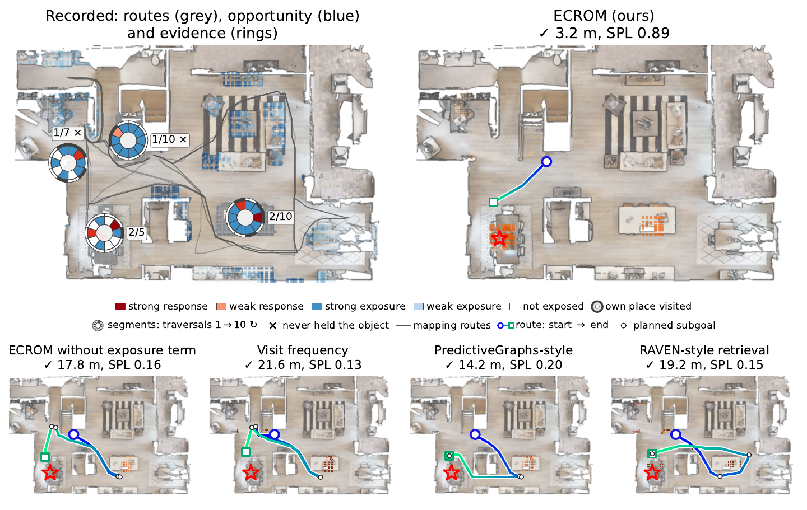
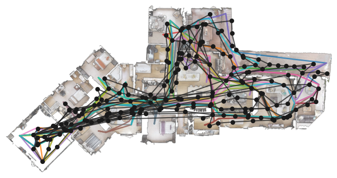
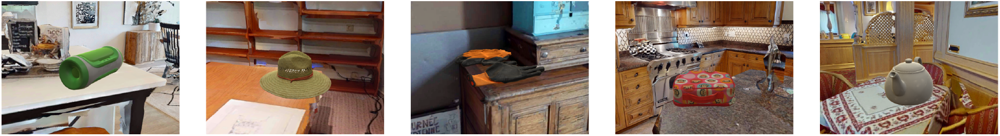
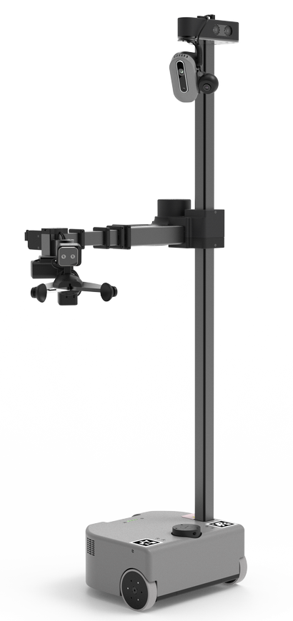
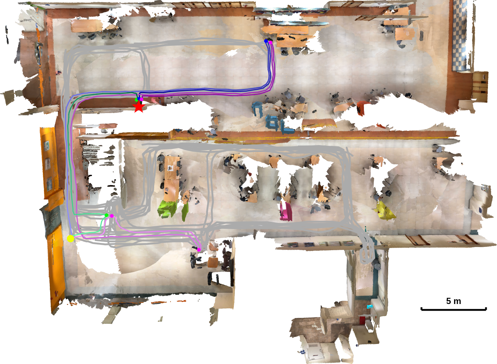

A robot should learn where objects usually appear, not only where they were last seen. ECROM lets every detection and non-detection count in proportion to the robot's opportunity to observe the place.

Long-term object search requires learning where objects usually appear from repeated but uneven observations of a changing environment. We formulate retrospective open-vocabulary memory as probabilistic inference from censored observations, where the key idea is to reason with evidence per opportunity: a detection or non-detection should influence belief only in proportion to the robot's opportunity to observe the corresponding location. We introduce ECROM, which uses this principle to estimate long-term prevalence for concepts specified only at query time and converts the resulting belief directly into an active-search prior. To evaluate this problem, we introduce a controlled long-term benchmark in ten HM3D homes that independently varies object placement and observation opportunity across repeated traversals. ECROM improves support-level AP on held-out queries by 4.5 points and search SPL by 4.2 points over the strongest competing memory in each metric.
Paper: arXiv:2610.00330
Keys, tools and mugs move constantly, yet they follow routines. Mapping visits are uneven: the camera faces elsewhere, a surface is occluded, or only a corner is visible. Counting detections or visits therefore confuses how often an object is there with how often we looked.
During mapping, each surface patch keeps a per-traversal opportunity c ∈ [0,1]: the fraction of the patch that returned depth. This is query-independent.
At query time, an open-vocabulary detector scores the stored frames. Its response becomes calibrated likelihood-ratio evidence Λ(r) for that text query.
A censored observation model combines both. Low opportunity makes any response uninformative; high opportunity makes hits and misses count.
The posterior mean prevalence is the search prior. A greedy planner looks where the most belief per meter is exposed, then discounts what it has just seen.
For one surface, in each traversal the object is present with probability θ (its long-term prevalence) and the surface is exposed to the sensor with probability c. The detector can only respond to an object that is both: the visible presence Z = X·V.
Marginalising presence and exposure gives one rule for a single traversal (Proposition 1):
The detector sets the direction (Λ > 1 supports presence, Λ < 1 supports absence); opportunity c sets the strength. With c = 0 a traversal contributes a factor of one. Below, each surface has ten traversals. Drag a bar to change its opportunity, click the circle to cycle the detector response.
Illustrative demo: Beta(1, 12) prior and a hand-set likelihood ratio per response level (no response 0.45, weak 3, strong 25). The paper calibrates Λ(r) on held-out calibration objects with isotonic regression. Detection count uses a threshold of 0.25, so weak and strong responses both count as one detection.
ECROM is built on the CROSS keyframe graph, whose sparse topology tolerates objects moving between sessions. Step through the pipeline.

Up-facing surface is voxelised into fixed 0.5 × 0.5 m patches per height band. A support is where an object may occur; a view u = (place, direction) is where the robot can look.
A traversal with c = 0 leaves the belief unchanged, and duplicating frames changes nothing, because c is computed from a union of voxels and r is a maximum over localised scores.
Prevalence gets a sparse Beta prior (α₀ ≪ β₀): one named object rarely sits on any given patch. The non-conjugate posterior is evaluated on a grid that is finer near θ = 0.
The planner picks the view that exposes the most belief per unit cost, then applies a discount for supports it has just looked at:
A failed look strongly discounts well-seen supports, weakly discounts partly seen ones, and leaves unseen ones alone. Click a surface to hide the target there, then step through the search.
Ten traversals per surface, scored by the same posterior as demo 2. The table and island are the teaser’s 2/5 and 2/10; the desk was almost never in view; the other surfaces were well seen and empty.
A toy floor plan (distances in straight lines, 20 px = 1 m, d0 = 1.25 m, pdet = 0.8, coverage falls off linearly to 7.5 m); it shows the mechanics of the planner, not benchmark performance. Which prior wins depends on the target and on this tiny map: detection count is fast when the target sits on a surface it already favours (try the dining table) and very slow on the barely seen desk, where it has no evidence at all; with only eight surfaces, uniform coverage is also competitive. Benchmark results are below.
Ten HM3D-Semantics homes where objects are re-placed from hidden long-term distributions while routes and gaze are sampled independently, so occurrence and observation opportunity are cleanly separated.

Estimation: does the memory rank the supports where the object really occurs? AP, Top-5 mass, AUROC and Bernoulli NLL against the ground-truth occurrence distribution. Search: does that belief find the object faster? Success rate and SPL under a 120 m budget.
Queries are text given after the history is recorded. Three further objects per home are calibration-only. In 22 of the 150 trials the object is not in the home at all; they count as failures.
Where the object rests each traversal is drawn from a hidden distribution.
Routes and viewpoints are sampled independently, giving uneven opportunity.
ECROM is best on all four distribution metrics and on both search metrics against counting-, retrieval-, latest-state- and PredictiveGraphs-style memories. All methods receive the same stored observations, supports and detector scores, so rows differ only in how each memory turns shared evidence into a belief.
Numbers are Table 1 of the paper: 50 queries in 10 houses; SR and SPL average all 150 trials. “–” means the score is not a probability, so NLL does not apply. Paired 95% intervals are in the paper’s appendix; the search gain over PredictiveGraphs-style memory is within them, the ranking gain is not.
Removing the exposure term (c = 1 everywhere) treats every non-detection as if the surface had been fully inspected: predicted prevalences per query sum to 2.32 instead of the true 4.76, while ECROM’s sum to 5.10. Binary exposure recovers only part of the gap, so fractional opportunity sharpens the ranking. Thresholding the detector loses information in two different ways: τ = .25 misses about half of the visible instances, τ = .15 adds four times as many false alarms.
AP gain of ECROM over “no exposure term”, queries split into thirds by the opportunity summed over their true supports.
On a roughly 500 m² office floor, each object had a hidden distribution over desks, tables and shelves and was re-placed before each of ten mapping traversals. Five queries × three placements gave 15 trials per method; the budget was 20 inspected views.


Dots: successes out of three placements. Bar: mean travel in meters, failed trials included. The gains are largest for the red cup and the scissors; on headphones and cupcakes all methods are similar, consistent with locations that most traversals saw. Luncheon meat is hardest: ECROM’s one failure reaches the right support but the detector does not fire.